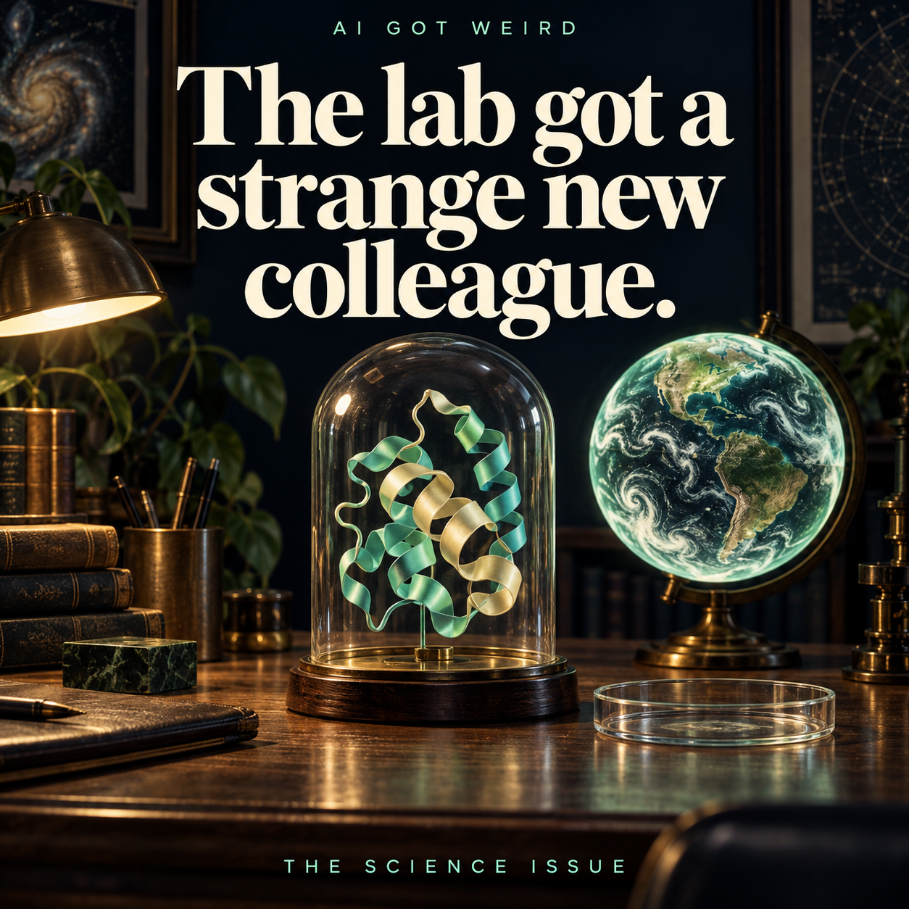

A search box for the shapes of life

Original cover artwork. Research images and data are linked in the source.
Imagine being handed the complete list of ingredients for an elaborate machine, but no drawing of how they fit together.
You know what is present. You still cannot see the pockets, hinges and surfaces that make the machine useful. A list is not a shape.
That is an approachable way into the protein-structure problem. A protein's sequence supplies important information, but its three-dimensional arrangement helps scientists investigate how it works and interacts with other molecules. Getting useful structural information has long involved serious experimental effort.
In July 2022, DeepMind and EMBL-EBI expanded the AlphaFold database to include predictions for more than 200 million protein structures. A result that once sounded like an isolated AI achievement became something researchers could look up.
The scale is startling. The word "predictions" is the part that keeps the scale meaningful.
The factual starting point
DeepMind announced the database expansion on 28 July 2022 with EMBL's European Bioinformatics Institute. It described coverage of nearly all catalogued proteins then known to science. The database contains predicted structures, not 200 million experimentally measured structures. Its partners made those predictions openly accessible to support research.
The practical value is a starting point for investigation. A predicted structure does not, by itself, demonstrate a protein's complete behavior, establish that a treatment works or replace every experiment. This article makes no claim about a particular patient, drug approval or medical outcome.
The story is therefore about changing the cost of asking a question in biology, rather than announcing that biology is finished.
Why shape changes the question
Consider a key. A list describing its metal and its dimensions would be useful to someone making it. But the detailed arrangement of ridges matters when you want to know whether it fits a particular lock.
Proteins are far more complicated than keys, and the analogy should not be pushed into a complete explanation. It helps with one point: arrangements create possibilities for interaction that a flat list can hide.
If you can inspect a plausible structure, you may be able to ask more focused questions. Which surface should be examined? Which region might be important? Where would an experimental observation fit? A structure can turn a vague investigation into a set of testable possibilities.
The improvement is not necessarily a single spectacular answer. It can be a better next question. That is a quieter kind of scientific progress, but it can affect many projects at once.
A map can be useful before it is complete
Imagine planning a journey with no map at all. A reasonably informative map would immediately help, even if some roads were uncertain or some areas needed local checking.
You would not therefore conclude that the map knows the weather, the traffic or whether a particular bridge is open today. Its usefulness depends on understanding what it represents and what it leaves out.
Predicted protein structures invite a similar discipline. A plausible shape can support useful reasoning while still carrying uncertainty. Different regions of a prediction can be more or less reliable. Some scientific questions may depend on interactions, movement or conditions that a single displayed structure does not capture fully.
The lesson is not to distrust every picture. It is to keep the picture connected to the kind of evidence it supplies. A map is most useful when its user knows which decisions it can support.
This is our explanatory analogy, not a claim that a molecular prediction and a road map have identical error properties.
The database changes who can begin
One way to think about a large public scientific resource is as a reduction in the effort needed to start exploring. A researcher can investigate a possibility without first recreating every prerequisite themselves.
That does not mean every scientific barrier disappears. People still need expertise, time, equipment, collaborators and money. But making a useful intermediate result available can remove one obstacle from many different paths.
There is an ordinary parallel in a public library. The library does not write a person's essay or guarantee a discovery. It makes material available so that more people can begin the work. A shared scientific database can play a similar enabling role while serving a much more specialized task.
This is why the distribution of a result can matter almost as much as the result itself. A powerful model kept inside a single demonstration and a resource that other researchers can inspect have different routes to impact.
The 2022 expansion made the scale of that difference unusually visible.
The beautiful picture can be the misleading part
A protein rendering looks authoritative. It has loops, ribbons, colors and a satisfying sense of three-dimensional detail. That visual richness can make uncertainty harder to notice.
Yet a precise-looking image need not mean that every part is equally well supported. The rendering software can display a speculative region just as smoothly as a confident one unless the viewer is given useful cues.
This is a broader problem in AI-generated scientific material. A polished output can hide the difference between a measured result, a prediction and an illustrative example. All three may be valuable. They answer different questions.
For readers, one useful habit is to ask what the colors and confidence indicators mean before interpreting the shape. Another is to distinguish the model's prediction from the experiment someone later performs using it.
The image is an entry point into the evidence. It should not erase the evidence's limitations simply by looking convincing.
Prediction and discovery can cooperate
Suppose a scientist has several possible explanations for an observation. A computational model might help rank which explanation is worth testing first. An experiment can then provide information the model did not have, which may suggest another question.
That loop is more useful to imagine than a machine replacing every stage of research in a single leap. A prediction can reduce the search space. An experiment can reveal whether a promising idea survives contact with the physical world.
Neither step becomes unimportant because the other improves. If predictions become cheaper, good experiments can become more valuable because they help separate the many plausible possibilities now available.
This is a general account of model-assisted research, not a report of a specific additional AlphaFold discovery. It helps explain how a computational advance can matter even when it does not directly produce a finished medicine or a new industrial process.
The intermediate step can be the contribution.
Why "all proteins" is too loose a phrase
Large numbers encourage short headlines. A database covering nearly all catalogued proteins at a particular point in time can quickly become "AI solved every protein."
Those descriptions are not equivalent. Catalogue coverage concerns which entries are represented. Prediction quality concerns how useful their structures are. Biological understanding concerns what those structures do under particular conditions. New scientific questions can remain even when coverage is broad.
A familiar analogy is a dictionary. Having an entry for a word does not mean every sentence containing it has been understood. Coverage is a powerful achievement, but it is one dimension of the task.
The careful wording is not less impressive. More than 200 million accessible predictions is an extraordinary scale for a research resource. It deserves to be described accurately because accuracy makes it possible to understand what changed.
A practical way to read a scientific AI announcement
Start with the object being produced. Is it a prediction, an experimental observation, a tool, a dataset or a finished intervention? Next ask who can access it and what they can actually do with it.
Then look for the remaining work. What needs validation? Which assumptions or conditions matter? What would count as a successful application beyond the original evaluation?
These questions are useful because scientific progress is often a chain of contributions. If a headline jumps directly from one new link to a promised outcome, the middle of the chain can disappear.
AlphaFold's database is a good case for keeping the chain visible. The AI contribution can be substantial, the public resource can be valuable and experimental work can remain essential. There is no contradiction to resolve.
The most exciting interpretation may be that more people can spend their effort on the next hard question.
The change worth remembering
A search box is an ordinary interface for an extraordinary amount of work. You type, a result appears, and the effort behind it becomes easy to forget.
The database story is compelling because it connects a difficult prediction problem to that everyday action. It changes how a researcher can begin exploring the shapes of life's molecular machinery.
It is a useful reminder that an AI breakthrough need not resemble a robot, a conversational personality or a machine claiming to replace a profession. Sometimes the consequential interface is simply an easier way to find a plausible structure and decide what to investigate next.
That is enough of a story without turning a prediction into a cure.
Original 2022 announcement: https://deepmind.google/blog/alphafold-reveals-the-structure-of-the-protein-universe/
Partner and access context: https://deepmind.google/blog/alphafold-transforms-biology-for-millions-around-the-world/
This historical explainer was written on 15 October 2026. The key, map, dictionary and library examples are our original explanations. They are not experiments or claims of medical effectiveness.
Keep the good stories coming.
Short visual news during the week. Longer reads when a story deserves it.
Follow AI Got Weird on Telegram ↗